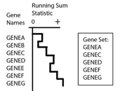
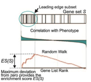

Gene Set Enrichment Analysis for the GenePattern platform
Author: Aravind Subramanian, Pablo Tamayo, David Eby; Broad Institute
Contact:
See the GSEA forum for GSEA questions.
Contact the GenePattern team for GenePattern issues.
GSEA Version: 4.1.0
Evaluates a genomewide expression profile and determines whether a priori defined sets of genes show statistically significant, cumulative changes in gene expression that are correlated with a phenotype. The phenotype may be categorical (e.g., tumor vs. normal) or continuous (e.g., a numerical profile across all samples in the expression dataset).
Gene Set Enrichment Analysis (GSEA) is a powerful analytical method for interpreting gene expression data. It evaluates cumulative changes in the expression of groups of multiple genes defined based on prior biological knowledge. It first ranks all genes in a data set, then calculates an enrichment score for each gene set, which reflects how often members of that gene set occur at the top or bottom of the ranked data set (for example, in expression data, in either the most highly expressed genes or the most underexpressed genes).
NOTE: this documentation refers to the GenePattern module edition of GSEA. Please visit The GSEA website for full information on the GSEA platform.
Microarray experiments profile the expression of tens of thousands of genes over a number of samples that can vary from as few as two to several hundreds. One common approach to analyzing these data is to identify a limited number of the most interesting genes for closer analysis. This usually means identifying genes with the largest changes in their expression values based on a t-test or similar statistic, and then picking a significance cutoff that will trim the list of interesting genes down to a handful of genes for further research.
Gene Set Enrichment Analysis (GSEA) takes an alternative approach to analyzing genomic data: it focuses on cumulative changes in the expression of multiple genes as a group, which shifts the focus from individual genes to groups of genes. By looking at several genes at once, GSEA can identify pathways whose several genes each change a small amount, but in a coordinated way. This approach helps reflect many of the complexities of co-regulation and modular expression.
GSEA therefore takes as input two distinct types of data for its analysis:
The GSEA GenePattern module uses either categorical or continuous phenotype data for its analysis. In the case of a categorical phenotype, a dataset would contain two different classes of samples, such as "tumor" and "normal." In the case of a continuous phenotype, a dataset would contain a numerical value for each sample. Examples of numerical profiles include the expression level of a specific gene or a measure of cell viability over the course of a time series experiment. The GSEA desktop application, available on the GSEA website, has additional functionalities. For instance, the GSEA desktop application can conduct an enrichment analysis against a ranked list of genes, or analyze the leading-edge subsets within each gene set. Many of these capabilities are also available in separate GP modules (see GSEAPreranked and GSEALeadingEdgeViewer).
If you are using GSEA on RNA-seq data, please read these guidelines.
GSEA first ranks the genes based on a measure of each gene's differential expression with respect to the two phenotypes (for example, tumor versus normal) or correlation with a continuous phenotype. Then the entire ranked list is used to assess how the genes of each gene set are distributed across the ranked list. To do this, GSEA walks down the ranked list of genes, increasing a running-sum statistic when a gene belongs to the set and decreasing it when the gene does not. A simplified example is shown in the following figure.

The enrichment score (ES) is the maximum deviation from zero encountered during that walk. The ES reflects the degree to which the genes in a gene set are overrepresented at the top or bottom of the entire ranked list of genes. A set that is not enriched will have its genes spread more or less uniformly through the ranked list. An enriched set, on the other hand, will have a larger portion of its genes at one or the other end of the ranked list. The extent of enrichment is captured mathematically as the ES statistic.

Next, GSEA estimates the statistical significance of the ES by a permutation test. To do this, GSEA creates a version of the data set with phenotype labels randomly scrambled, produces the corresponding ranked list, and recomputes the ES of the gene set for this permuted data set. GSEA repeats this many times (1000 is the default) and produces an empirical null distribution of ES scores. Alternatively, permutations may be generated by creating “random” gene sets (genes randomly selected from those in the expression dataset) of equal size to the gene set under analysis.
The nominal p-value estimates the statistical significance of a single gene set's enrichment score, based on the permutation-generated null distribution. The nominal p-value is the probability under the null distribution of obtaining an ES value that is as strong or stronger than that observed for your experiment under the permutation-generated null distribution.
Typically, GSEA is run with a large number of gene sets. For example, the MSigDB collection and subcollections each contain hundreds to thousands of gene sets. This has implications when comparing enrichment results for the many sets:
The ES must be adjusted to account for differences in the gene set sizes and in correlations between gene sets and the expression data set. The resulting normalized enrichment scores (NES) allow you to compare the analysis results across gene sets.
The nominal p-values need to be corrected to adjust for multiple hypothesis testing. For a large number of sets (rule of thumb: more than 30), we recommend paying attention to the False Discovery Rate (FDR) q-values: consider a set significantly enriched if its NES has an FDR q-value below 0.25.
For more information, see http://www.gsea-msigdb.org/gsea.
Input expression datasets with the character '-' or spaces in their file names causes GSEA to error.
The GSEA GenePattern module interprets the sample labels in categorical CLS files by their order of appearance, rather than via their numerical value, unlike some other GenePattern modules. For example, in the CLS file below:
13 2 1
# resistant sensitive
1 1 1 1 1 1 1 1 0 0 0 0 0
Most other GenePattern modules would interpret the first 8 samples to be sensitive and the remaining 5 to be resistant. However, GSEA assigns resistant to the first 8 samples and sensitive to the rest. This is because GSEA assigns the first name in the second line to the first symbol found on the third line.
If the sample labels are in numerical order, as below, no difference in behavior will be noted.
13 2 1
# resistant sensitive
0 0 0 0 0 1 1 1 1 1 1 1 1
Subramanian A, Tamayo P, Mootha VK, Mukherjee S, Ebert BL, Gillette MA, Paulovich A, Pomeroy SL, Golub TR, Lander ES, Mesirov JP. Gene set enrichment analysis: A knowledge-based approach for interpreting genome-wide expression profiles. PNAS. 2005;102(43);15545-15550. (Link)
Mootha VK, Lindgren CM, Eriksson K-F, Subramanian A, Sihag S, Lehar J, Puigserver P, Carlsson E, Ridderstrale M, Laurila E, Houstis N, Daly MJ, Patterson N, Mesivor JP, Golub TR, Tamayo P, Spiegelman B, Lander ES, Hirschhorn JN, Altshuler D, Groop LC. PGC-1-α responsive genes involved in oxidative phosphorylation are coordinately downregulated in human diabetes. Nat Genet. 2003;34:267-273. (link)
GSEA User Guide: http://www.gsea-msigdb.org/gsea/doc/GSEAUserGuideFrame.html
GSEA website: http://www.gsea-msigdb.org/
This version of the module is based on the GSEA v4.1.x code base. See the Release Notes for new features and other notable changes.
| Name | Description |
|---|---|
| expression dataset * | This is a file in either GCT or RES format that contains the expression dataset. |
| gene sets database * |
This parameter's drop-down allows you to select gene sets from the Molecular Signatures Database (MSigDB) on the GSEA website. This drop-down provides access to only the most current version of MSigDB. You can also upload your own gene set file(s) in GMT, GMX, or GRP format. If you want to use files from an earlier version of MSigDB you will need to download them from the archived releases on the website. |
| number of permutations * | Specifies the number of permutations to perform in assessing the statistical significance of the enrichment score. It is best to start with a small number, such as 10, in order to check that your analysis will complete successfully (e.g., ensuring you have gene sets that satisfy the minimum and maximum size requirements and that the collapsing genes to symbols works correctly). After the analysis completes successfully, run it again with a full set of permutations. The recommended number of permutations is 1000. Default: 1000 |
| phenotype labels * |
A phenotype label file defines categorical or continuous-valued phenotypes and for each sample in your expression dataset assigns a label or numerical value for the phenotype. This is a tab-delimited text file in CLS format. A categorical phenotype CLS file should contain only two labels, such as tumor and normal. A continuous phenotype CLS file may define one or more continuous-valued phenotypes. Each phenotype definition includes a profile, assigning a numerical value to each sample in the expression dataset. GSEA interprets CLS files differently than many GenePattern modules. See the Known Issue for more details. |
| target profile | Name of the target phenotype for a continuous phenotype CLS. This parameter must be left blank in the case of a categorical CLS file. |
| collapse dataset * |
Select whether to collapse each probe set in the expression dataset into a single vector for the gene, which gets identified by its gene symbol. It is also possible to remap symbols from one namespace to another without collapsing (an error will occur if multiple source genes map to a single destination gene). No_Collapse will use the dataset as-is, with its native feature identifiers. When you select this option, the chip annotation file (chip platform parameter) is ignored and you must specify a gene set file (gene sets database file parameter) that identify genes using the same feature (gene or probe) identifiers as is used in your expression dataset. Default: Collapse |
| permutation type * |
Type of permutations to perform in assessing the statistical significance of the enrichment score. Options are:
|
| chip platform |
This drop-down allows you to specify the chip annotation file, which lists each probe on a chip and its matching HUGO gene symbol, used for the expression array. This parameter is required if collapse dataset is set to true. The chip files listed here are from the GSEA website: http://www.gsea-msigdb.org/gsea/downloads.jsp. If you used a file not listed here, you will need to provide it (in CHIP format) using 'Upload your own file'. Please see the MSigDB 7.0 Release Notes for information about symbol remapping. |
| scoring scheme * |
The enrichment statistic. This parameter affects the running-sum statistic used for the enrichment analysis, controlling the value of p used in the enrichment score calculation. Options are:
|
| metric for ranking genes * |
GSEA ranks the genes in the expression dataset and then analyzes that ranked list of genes. Use this parameter to select the metric used to score and rank the genes. The default metric for ranking genes is the signal-to-noise ratio. To use this metric, your expression dataset must contain at least three (3) samples for each phenotype. For descriptions of the ranking metrics, see Metrics for Ranking Genes in the GSEA User Guide. |
| gene list sorting mode * | Specifies whether to sort the genes using the real (default) or absolute value of the gene-ranking metric score. |
| gene list ordering mode * | Specifies the direction in which the gene list should be ordered (ascending or descending). |
| max gene set size * | After filtering from the gene sets any gene not in the expression dataset, gene sets larger than this are excluded from the analysis. Default: 500 |
| min gene set size * | After filtering from the gene sets any gene not in the expression dataset, gene sets smaller than this are excluded from the analysis. Default: 15 |
| collapsing mode for probe sets with more than one match * |
Collapsing mode for sets of multiple probes for a single gene. Used only when the collapse dataset parameter is set to Collapse. Select the expression values to use for the single probe that will represent all probe sets for the gene. Options are:
|
| normalization mode * |
Method used to normalize the enrichment scores across analyzed gene sets. Options are:
|
| randomization mode * |
Method used to randomly assign phenotype labels to samples for phenotype permutations. ONLY used for phenotype permutations. Options are:
|
| omit features with no symbol match * | Used only when collapse dataset is set to Collapse. By default (true), the new dataset excludes probes/genes that have no gene symbols. Set to false to have the new dataset contain all probes/genes that were in the original dataset. |
| make detailed gene set report * | Create detailed gene set report (heat map, mountain plot, etc.) for each enriched gene set. Default: true |
| median for class metrics * | Specifies whether to use the median of each class, instead of the mean, in the metric for ranking genes. Default: false |
| number of markers * | Number of features (gene or probes) to include in the butterfly plot in the Gene Markers section of the gene set enrichment report. Default: 100 |
| plot graphs for the top sets of each phenotype * | Generates summary plots and detailed analysis results for the top x genes in each phenotype, where x is 20 by default. The top genes are those with the largest normalized enrichment scores. Default: 20 |
| random seed * | Seed used to generate a random number for phenotype and gene_set permutations. Timestamp is the default. Using a specific integer valued seed generates consistent results, which is useful when testing software. |
| save random ranked lists * | Specifies whether to save the random ranked lists of genes created by phenotype permutations. When you save random ranked lists, for each permutation, GSEA saves the rank metric score for each gene (the score used to position the gene in the ranked list). Saving random ranked lists is very memory intensive; therefore, this parameter is set to false by default. |
| output file name * | Name of the output file. The name cannot include spaces. Default: <expression.dataset_basename>.zip |
| create svgs * | Whether to create SVG images (compressed) along with PNGs. Saving PNGs requires a lot of storage; therefore, this parameter is set to false by default. |
| selected gene sets | Semicolon-separated list of gene sets from the provided gene sets database files (GMT/GMX/GRP). If you are using multiple files then you must prefix each selected gene set with its file name followed by '#' (like "my_file1.gmt#selected_gene_set1,my_file2.gmt#selected_gene_set2"). With a single file only the names are necessary. Leave this blank to select all gene sets. |
| alt delim | Optional alternate delimiter character for gene set names instead of comma for use with selected.gene.sets. If used, a semicolon is recommended. |
| create gcts * | Whether to save the dataset subsets backing the GSEA report heatmaps as GCT files; these will be subsets of your original dataset corresponding only to the genes of the heatmap. |
| create zip * | Create a ZIP bundle of the output files. This is true by default, matching the former behavior where a ZIP bundle was always created. |
* - required
1. expression dataset: GCT or RES file
This file contains the expression dataset.
2. gene sets database: GMT, GMX, or GRP file.
Gene set files, either your own or from the listed MSigDB files.
3. phenotype labels: CLS file
The GSEA module supports two kinds of class (CLS) files: categorical phenotype and continuous phenotype.
A categorical phenotype CLS file must define a single phenotype having two categorical labels, such as tumor and normal.
A continuous phenotype CLS may define multiple phenotypes. Each phenotype definition assigns a numerical value for each sample. This series of values defines the phenotype profile. For example,
4. chip platform: an optional CHIP file may be provided if you do not select a chip platform from the drop-down
1. Optional Enrichment Report archive: ZIP
ZIP file containing the result files. For more information on interpreting these results, see Interpreting GSEA Results in the GSEA User Guide. Note that in prior versions the ZIP bundle was created as the only output file. This behavior has been changed to give direct access to the results without the need for a download. The default is to create the ZIP bundle, matching the former behavior, but the report files will always be created directly.
2. Enrichment Report: HTML and PNG images
The GSEA Enrichment Report. As above, see the GSEA User Guide for more info.
3. Optional SVG images (compressed)
Identical to the PNGs in the Enrichment Report, but in SVG format for higher resolution. These are GZ compressed to reduce space usage; they can be decompressed using 'gunzip' on Mac or Linux and 7-Zip on Windows
3. Optional GCTs
The datasets backing all the heatmap images from the Enrichment Report for use in external visualizers or analysis tools. These will have the same name as the corresponding image but instead with a GCT extension.
Task Type:
Pathway Analysis
CPU Type:
any
Operating System:
any
Language:
Java
| Version | Release Date | Description |
|---|---|---|
| 20.2.2 | 2021-3-22 | Updated to MSigDB v7.3. |
| 20.2.1 | 2020-10-27 | Fixed a bug in the Collapse Sum mode. |
| 20.2.0 | 2020-9-23 | Updated to MSigDB v7.2. Updated to use dedicated Docker container. |
| 20.1.0 | 2020-7-30 | Updated to use the GSEA v4.1.0 code base. |
| 20.0.5 | 2020-4-2 | Updated to use the GSEA v4.0.3 code base. Updated to give access to MSigDB v7.1. |
| 20.0.4 | 2019-11-19 | Minor documentation update. |
| 20.0.3 | 2019-10-24 | Updated to use the GSEA v4.0.2 code base. Updated to give access to MSigDB v7.0. OpenJDK 11 port. Java code moved into the GSEA Desktop code base. |
| 19.0.26 | 2019-10-10 | Updated to use the GSEA v3.0 open-source code base. Updated to give access to MSigDB v6.2. Unified the Gene Set DB selector parameters and better downloading of MSigDB files. Added selected.gene.sets, alt.delim, creat.gcts and create.svgs parameters. Better temp file clean-up and other internal code improvements. |
| 18 | 2017-05-18 | Updated to give access to MSigDB v6.0 |
| 17 | 2016-02-04 | Updated to give access to MSigDB v5.1 |
| 16 | 2015-12-03 | Updating the GSEA jar to deal with an issue with FTP access. Fixes an issue for GP@IU. |
| 15 | 2015-06-16 | Add built-in support for MSigDB v5.0, which includes new hallmark gene sets. |
| 14 | 2013-06-14 | Update the gene sets database list and the GSEA Java library, added support for continuous phenotypes.. |
| 13 | 2012-09-20 | Updated and sorted the chip platforms list, changed default value of num permutations to 1000, and updated the GSEA java library |
| 12 | 2011-04-08 | Fixed parsing of gene sets database file names which contain @ and # symbols and added gene sets containing entrez ids |
| 11 | 2010-11-05 | Fixed parsing of chip platform file names which contain @ and # symbols |
| 10 | 2010-10-01 | Updated selections for the gene sets database parameter to reflect those available in MSigDB version 3 |